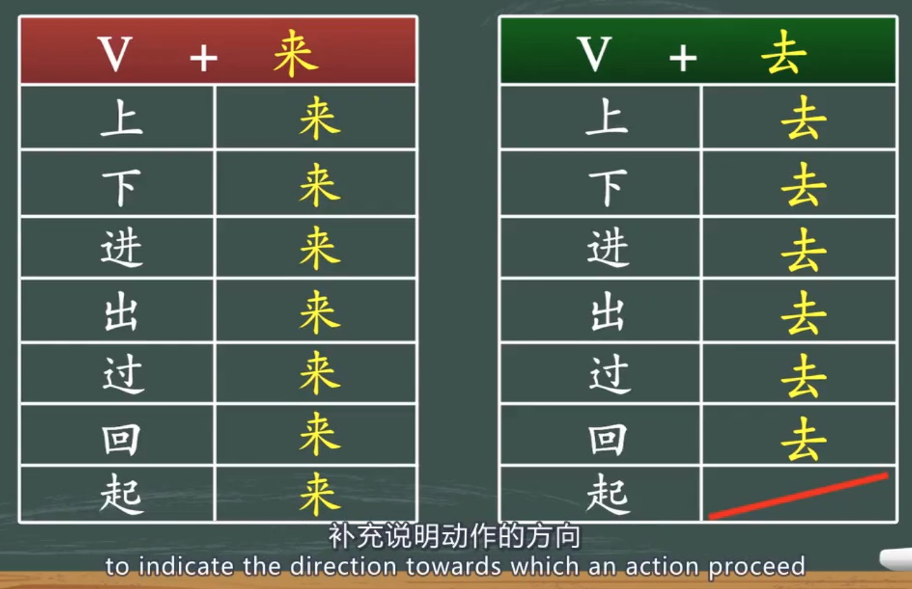

Content for Lesson 5.4
Table of common usages

When object refers to a location, e.g. 房间
。。。 V + OBJ + 去/来
。。。 上/下/进/出/回/过/起 + 他 + 去/来
E.g. 他跑进房间里来了。
He came into the room.
When the object refers to a person or thing, it can be placed either before or after 去/来
。。。 V + 去/来 + OBJ
。。。 上/下/进/出/回/过/起 + 去/来 + 东西
跑出来
走出来
Run out
Walk out
他跑进来了
他走进来了
He ran in.
He walked in.
他跑出去了
他走出去了
He ran out.
He went out.
他走上来了。
他走上去了。
He came up.
He went up.
他跑下去了。(A - B)
和跑下来了。(B - A)
He ran down
他跑过来了。 (A - B)
他跑过去了。 (B - A)
He ran over, e.g. crossing the street.
他跑回去了。(A - B)
他跑回来了。(B - A)
He ran back , e.g. crossing the street.
他走上楼去了。
He went up a storey.
When the object refers to a location, you can turn A into B, e.g.
A. 他拿出来一本书。
B. 他拿出一本书来。
马(Mǎ)丁(dīng)第(dì)一(yī)个(gè)__________了(le)，他(Tā)是(shì)冠(guàn)军(jūn)。
跑过来
我(Wǒ)给(gěi)你(nǐ)们(men)__________了(le)几(jǐ)张(zhāng)照(zhào)片(piàn)。
发(fā)过(guò)去(qù)
听(Tīng)见(jiàn)有(yǒu)人(rén)敲(qiāo)门(mén)，她(Tā)马(mǎ)上(shàng)__________开(kāi)门(mén)。
站(zhàn)起(qǐ)来(lái)
她(Tā)从(cóng)书(shū)包(bāo)里(lǐ)__________一(yī)本(běn)书(shū)。
拿(ná)出(chū)来(lái)
我(Wǒ)从(cóng)大(dà)卫(wèi)那(nà)儿(r)__________一(yī)辆(liàng)自(zì)行(xíng)车(chē)。
借(jiè)回(huí)来(lái)
他(Tā)们(men)已(yǐ)经(jīng)快(kuài)到(dào)山(shān)顶(dǐng)了(le)，咱(Zán)们(men)快(kuài)点(diǎn)儿(ér)爬(pá)(1)吧(ba)。
上去
太(Tài)累(lèi)了(le)，咱(Zán)们(men)坐(zuò)(1)休(xiū)息(xī)一(yì)会(huì)儿(er)吧(ba)。
下来
看(Kàn)见(jiàn)我(wǒ)以(yǐ)后(hòu)，他(Tā)走(zǒu)(1)给(gěi)我(wǒ)一(yī)本(běn)书(shū)。
过来
小(Xiǎo)心(xīn)点(diǎn)儿(ér)，别(Bié)从(cóng)楼(lóu)上(shàng)摔(shuāi)(1)。
下去
我(Wǒ)到(dào)车(chē)站(zhàn)的(de)时(shí)候(hòu)，汽(Qì)车(chē)刚(gāng)开(kāi)(1)，我(Wǒ)只(zhǐ)好(hǎo)等(děng)下(xià)一(yī)辆(liàng)车(chē)。
过去
我(Wǒ)刚(gāng)才(cái)看(kàn)见(jiàn)他(tā)从(cóng)图(tú)书(shū)馆(guǎn)走(zǒu)(1)，去(Qù)了(le)旁(páng)边(biān)的(de)小(xiǎo)卖(mài)部(bù)。
出来